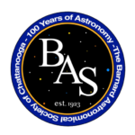
Astronomy & Scouting
How Scouting America and Astronomy Have Been Connected for Over a Century
Tyler Malone | Vice President, BAS | Assistant Cubmaster, Pack 3116
Welcome everyone. Tonight I want to share something I'm passionate about — the intersection of my two worlds: astronomy and Scouting. As most of you know, I'm an Assistant Cubmaster with Pack 3116 in addition to serving as VP here at BAS. What you might not know is just how deep the connection between Scouting and astronomy goes — and how BAS is already building on that connection. I'll also share a proposal that I think can take our educational outreach to the next level.
Tonight's Agenda
A 115-Year History: Astronomy in Scouting
Scouts Who Reached the Stars
Current Scouting Astronomy & Space Programs
BAS + Scouting: What We've Done So Far
Scout the Moon: A Proposal for BAS
Here's our roadmap for tonight. We'll start with some history, highlight some famous Scouts you'll recognize, look at what Scouting offers today in astronomy and space, recap our recent partnership events, and then I'll introduce a program I'm proposing called Scout the Moon.
The Astronomy Merit Badge
1911 — Present
One of the original 57 merit badges when BSA first began awarding them in 1911
One of only ~21 original badges still offered today
Continuously available for over 115 years
Most recently updated: January 2025
Source: Wikipedia — "Original 57 merit badges (Boy Scouts of America)"; USScouts.org
Astronomy was there from the very beginning of Scouting in America. When the BSA created its first 57 merit badges in 1911, Astronomy was among them. And unlike most of those original badges, it's still going strong today — over 115 years later. That makes it one of the longest-running structured youth astronomy programs in the country.
The Space Exploration Merit Badge
1965 — Created with NASA
On June 3, 1965, astronaut Ed White carried the brand-new badge in his spacesuit pocket during the first American spacewalk on Gemini 4
That badge is now displayed at the National Scouting Museum at Philmont Scout Ranch
Over 420,000 Space Exploration merit badges earned since 1965
Source: Scouting Magazine; BSA Scouting and Space Exploration Fact Sheet
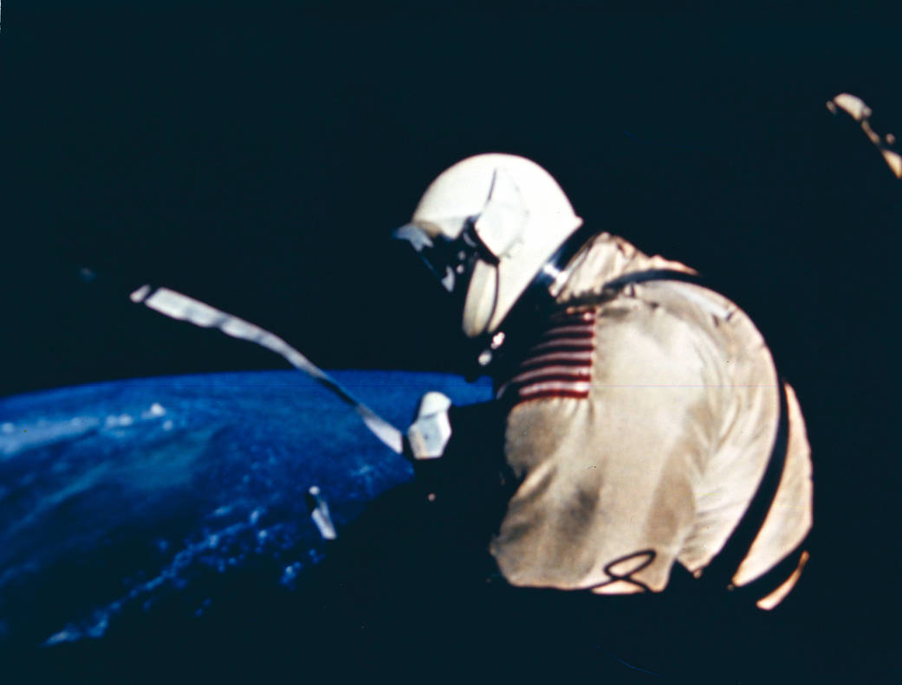
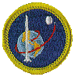
In 1965, BSA partnered directly with NASA to create the Space Exploration merit badge. And they launched it — literally. Astronaut Ed White carried the very first Space Exploration merit badge in his spacesuit pocket during the first American spacewalk aboard Gemini 4. That actual badge is now on display at Philmont. Since then, over 420,000 Scouts have earned it.
NASA–Scouting Partnership Continues
December 2024: First-Ever Space Act Agreement
NASA's Office of STEM Engagement signed a Space Act Agreement with Scouting America's Sam Houston Area Council
Enables a space-focused summer camp at Camp Strake:
Hands-on STEM activities
Johnson Space Center tours
Robotics and space exploration workshops
NASA Glenn Research Center maintains "Scouting Paths to NASA" career pathway program
Source: NASA.gov; The Leader News
This partnership isn't just historical. Just in December 2024, NASA signed its first-ever Space Act Agreement with a Scouting council — the Sam Houston Area Council near Johnson Space Center. This creates a space-focused summer camp with JSC tours, robotics, and hands-on STEM. NASA Glenn also maintains a formal program connecting Scouting advancement to NASA career paths. The institutional connection between these organizations is alive and growing.
Scouting's Impact on Space Exploration
2/3
of all NASA astronauts were Scouts
11 of 12
moonwalkers were Scouts
39
Eagle Scout astronauts
20%
of NASA's latest astronaut class are Eagle Scouts
Source: Scouting Magazine; BSA Fact Sheet 210-558; NASA Glenn Research Center
The numbers here are staggering. Two-thirds of all astronauts NASA has ever selected had Scouting backgrounds. Eleven of the twelve moonwalkers were Scouts. Nearly 40 were Eagle Scouts. And this isn't just a historical trend — 20 percent of NASA's most recent graduating astronaut class are Eagle Scouts. Scouting has been one of the most significant pipelines to space exploration in American history.
Eagle Scout Neil Armstrong
Eagle Scout , Troop 14/25, Wapakoneta, OhioEarned 26 merit badges
First person to walk on the Moon — Apollo 11, July 20, 1969
Named the Lunar Module "Eagle"
Carried a World Scout Membership Badge to the Moon and back
"I'd like to say hello to all my fellow Scouts and Scouters at Farragut State Park in Idaho having a National Jamboree there this week."
— En route to the Moon, July 18, 1969
Source: Scouting Magazine; Order of the Arrow; Apollo11Space.com
Of course we have to start with Neil Armstrong. Eagle Scout, Troop 14 in Wapakoneta, Ohio. He earned 26 merit badges. He named the Lunar Module "Eagle." He carried a World Scout Badge to the Moon. And on July 18, 1969 — two days before stepping onto the lunar surface — he took a moment to radio a greeting to his fellow Scouts at the National Jamboree back on Earth. Scouting was clearly part of his identity, even at humanity's greatest moment.
Notable Scout Astronauts
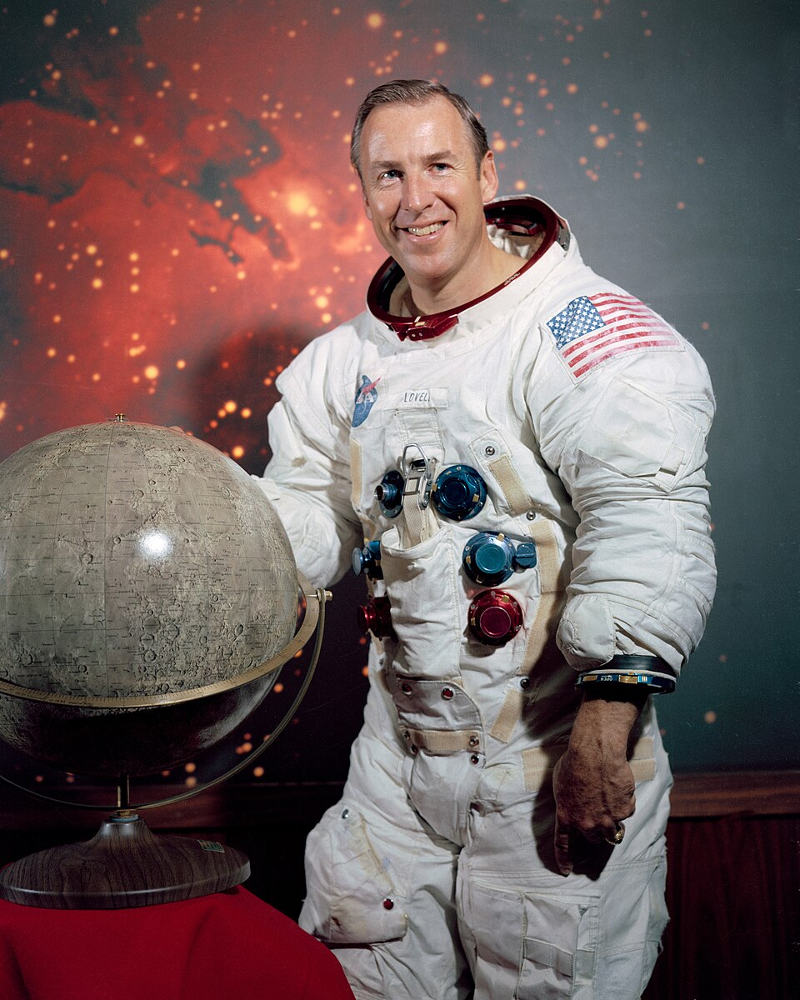
Jim Lovell
Apollo 13 Commander
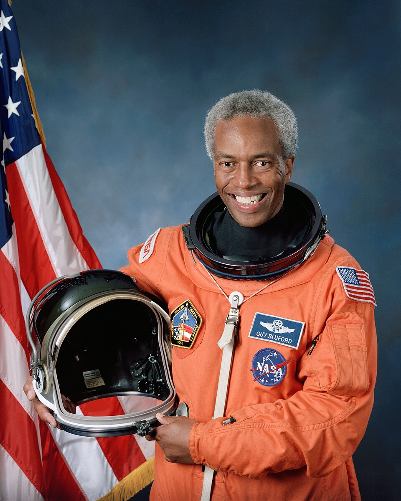
Guion Bluford
1st African American in Space
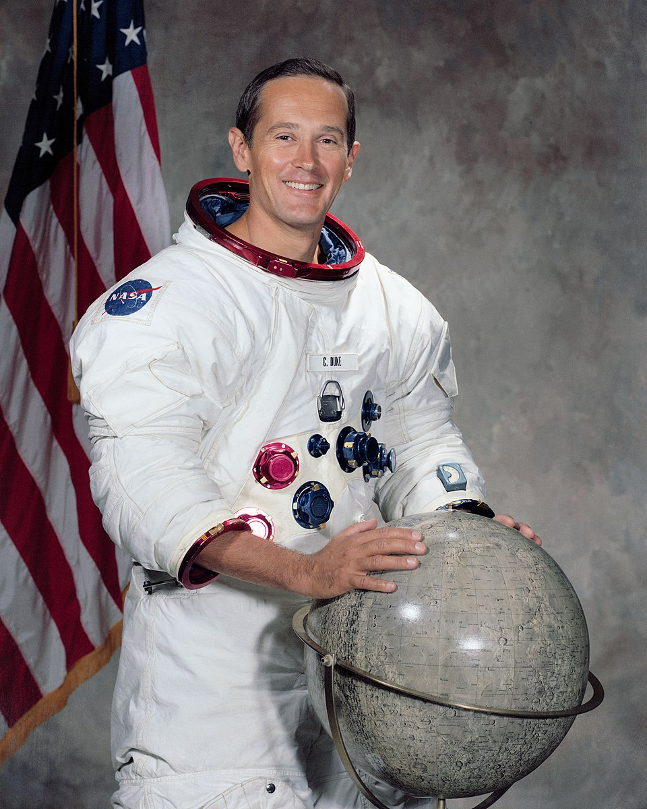
Charlie Duke
Youngest Moonwalker
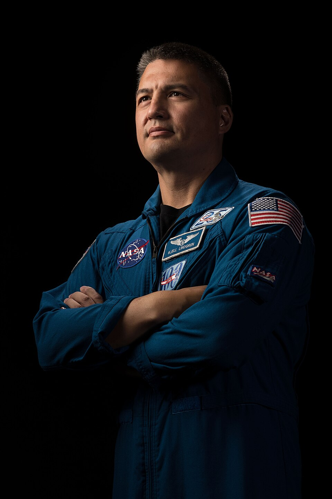
Kjell Lindgren
Crew-4 Commander
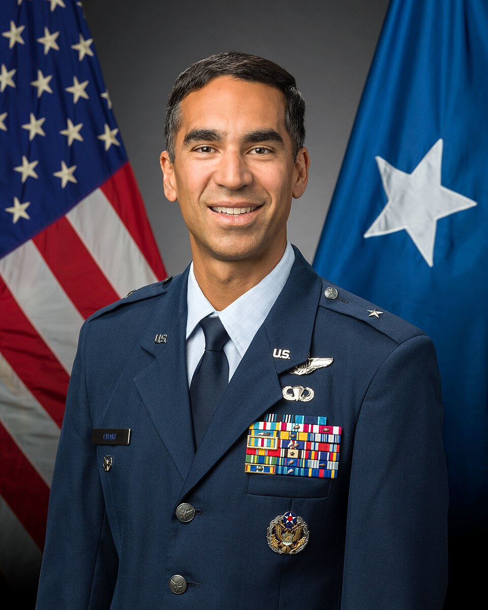
Raja Chari
Crew-3 Commander
Source: Scouting Magazine; ScoutingAlumni.org; USScouts.org
And it's not just Armstrong. Jim Lovell — the first Eagle Scout to fly in space and commander of the famous Apollo 13 mission. Guion Bluford — first African American in space, Eagle Scout. Charlie Duke, youngest person to walk on the Moon. And today, Kjell Lindgren — Crew-4 commander who still serves as an assistant Scoutmaster. Raja Chari, Crew-3 commander. The tradition continues.
In Their Own Words
"I can think specifically to a time when I was doing survival training in the Air Force, and, to me, it was just like a cool camping trip because I got to apply some of the practices I learned in the Scouts. It really prepared me for my career."
— Raja Chari, SpaceX Crew-3 Commander
Kjell Lindgren spoke to Scouts via radio from the ISS during the 23rd World Scout Jamboree in Japan (2015)He continues to serve as an assistant Scoutmaster and outdoor ethics advisor
Source: ScoutingWire; Scouting Magazine
These astronauts don't just have Scouting on their resume — they credit it directly. Raja Chari said Air Force survival training felt like a cool camping trip because of what he learned in Scouts. Kjell Lindgren literally radioed Scouts from the International Space Station at the World Jamboree in 2015, and he still serves as a Scoutmaster today. These connections are real and personal.
Astronomy Merit Badge
Current Requirements — Scouts BSA (Ages 11–17)
Identify 10+ constellations and 8 conspicuous stars
Sketch Big Dipper or Cassiopeia at two times to show movement
Explain light pollution and its effects
Describe types of telescopes and 3 instruments
List 5 most visible planets; observe a planet
Sketch lunar face labeling 5 seas and 5 craters
Sketch Moon's phase on 4 nights in one week
Attend a star party, planetarium, or astronomy club
Source: Scouting.org; BoyScoutTrail.com
Let's look at what Scouts are actually doing today. The Astronomy merit badge requires real observational skill — 10 constellations, 8 stars, sketching the Moon with named features, understanding telescopes and light pollution. And notice that last requirement — Scouts are encouraged to attend a star party or visit an astronomy club. That's an open door for BAS.
Space Exploration Merit Badge
Current Requirements — Scouts BSA (Ages 11–17)
Explain the purpose and benefits of space exploration
Research space pioneers — design a collector's card
Build, launch, and recover a model rocket ; identify 8 componentsDemonstrate understanding of action-reaction, orbits, satellite imaging
Discuss robotic missions or design a sample-return mission
Design an inhabited base on another world
Explore space careers
Source: Scouting.org; BoyScoutTrail.com
The Space Exploration badge is more engineering and mission-focused. Scouts build and launch model rockets, learn orbital mechanics, discuss robotic missions, and even design an off-world base. Over 420,000 Scouts have earned this badge since 1965.
Cub Scout & STEM Programs
Cub Scouts (Grades K–5)
Sky is the Limit — Tiger (1st grade) elective adventureNight sky observation, use binoculars/telescope, identify 2 constellations
Only dedicated astronomy adventure in the current Cub Scout program
STEM Nova Awards (Now Discontinued)
"Out of This World" (Wolf through Arrow of Light) — was the primary space-focused Cub Scout awardRequired finding constellations, investigating planets, visiting an astronomy club
Nova and Supernova awards have been discontinued by Scouting America , further widening the gap
Source: Scouting.org; ScouterMom.com
For younger Scouts, the options are even more limited now. Tigers have one astronomy elective called "Sky is the Limit." The STEM Nova program used to help fill the gap — the "Out of This World" award was specifically space-focused and encouraged visiting an astronomy club. But Nova and Supernova awards have been discontinued by Scouting America. That means there's now even less structured astronomy programming available to Scouts — which makes Scout the Moon all the more relevant.
The Gap
Astronomy merit badge: Scouts BSA only (ages 11–17)
Sky is the Limit: Tigers only (1st grade)
"Out of This World" Nova: Wolf through AOL — now discontinued
No structured, ongoing lunar observation program for any ageUnits want to do astronomy but lack expertise and equipment
The Astronomical League's Sky Puppy program exists but is not formally partnered with Scouting
Source: Astronomical League — Sky Puppy Observing Program
So here's the gap. There's strong programming at the Scouts BSA level with merit badges, but Cub Scouts — grades K through 5 — have almost nothing structured in astronomy beyond a single Tiger adventure. Units want to do astronomy nights but don't have the knowledge or equipment. The Astronomical League has a Sky Puppy program for kids 10 and under, but it's not formally connected to Scouting. This is exactly the gap we can fill.
University of Scouting
Cherokee Area Council
BAS hosted an information table at the Cherokee Area Council's University of Scouting
Provided exposure to approximately 100 adult and youth leaders across the council
Introduced BAS's mission and capabilities to Scout leadership
Generated interest in future astronomy partnerships
Earlier this year, BAS had an information table at the Cherokee Area Council's University of Scouting. This is a training event for adult leaders and older youth leaders across the council. We reached about 100 people and introduced them to who we are and what we can offer. The response was very positive — leaders were excited about the idea of connecting their units with our club.
Star Party — Pack 4
Reflection Riding
BAS hosted a star party for Cub Scout Pack 4 at Reflection Riding
Approximately 40 Scouts (grades K–5) and their families attended
Scouts observed through BAS member telescopes with member guidance
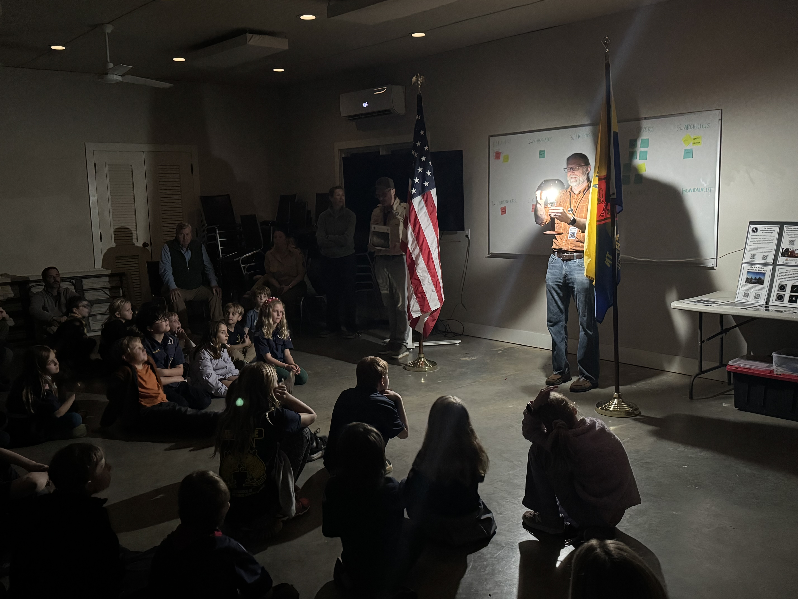
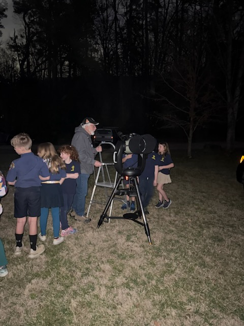
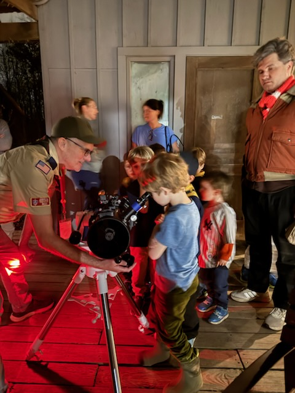
We also hosted a star party for Cub Scout Pack 4 out at Reflection Riding. About 40 Cub Scouts and their families came out. These are kids in kindergarten through 5th grade. We had club telescopes set up and our members helped guide the kids through what they were seeing. The excitement on those kids' faces — that's exactly what our educational mission is about. And the parents were just as engaged.
Pack 3116 at Tellus Science Museum
Pack 3116 visited the Tellus Science Museum in Cartersville, GAExplored space science exhibits and a mockup of the International Space Station
Connected real science with Scouting adventure
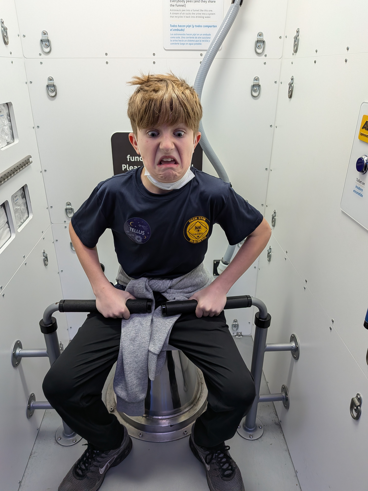
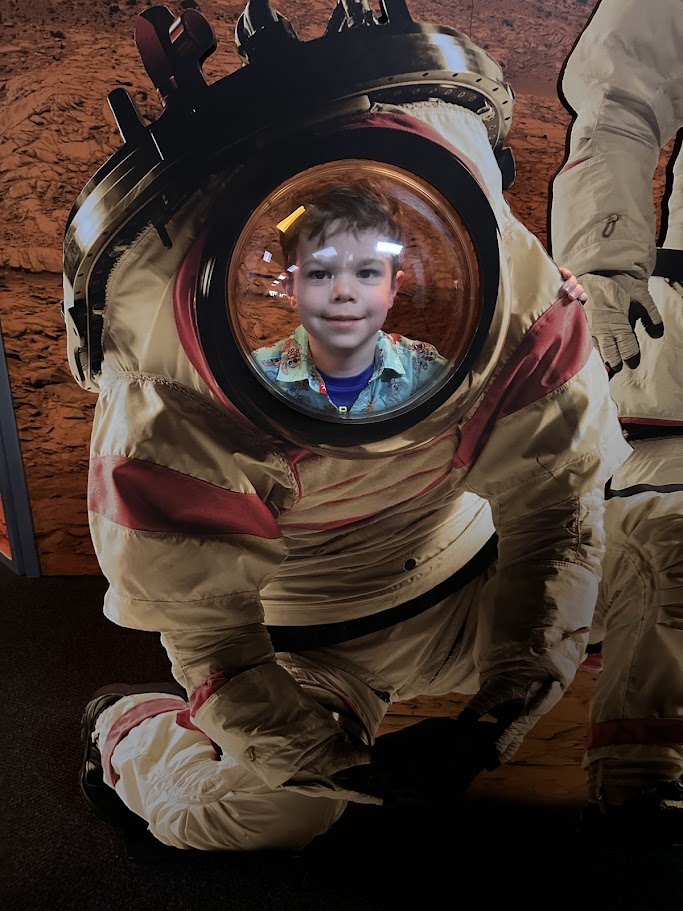
And my own pack — Pack 3116 — took a trip to the Tellus Science Museum in Cartersville, where the kids explored space science exhibits including a mockup of the ISS. These are the kinds of experiences that spark lifelong interest in science and astronomy. And every one of these events has come about because of the BAS-Scouting connection.
My Personal Inspiration
Wood Badge
Scouting America's premier leadership training program , originating in 1919 at Gilwell Park, England
Graduates commit to a "Ticket" — five SMART goals completed within 18 months
My Wood Badge Ticket
Vision: "Grow Scouting in my Pack by supporting leaders and building programming"
Goal #6: "Create an observation program for the Moon and present it to the Cherokee Area Council Activities Committee by Spring 2027"
I want to share where this idea came from personally. Last year I completed Wood Badge — Scouting America's premier leadership training. It dates back to 1919 when Baden-Powell himself ran the first course. The key commitment of Wood Badge is your "Ticket" — five goals you pledge to complete within 18 months that will make a real impact. My personal vision was to grow Scouting in my Pack by supporting leaders and building programming. Goal number six on my ticket is specifically to create a lunar observation program and present it to the Cherokee Area Council. So Scout the Moon isn't just a good idea I had — it's a formal commitment I made through Wood Badge, and it's the natural intersection of my two passions: BAS and Scouting. Tonight's presentation is actually a milestone on that ticket — bringing this to the full membership.
What is Scout the Moon?
A structured lunar observation program designed by BAS for Scouting America's Cherokee Area Council
Inspired by International Observe the Moon Night (NASA)Leverages BAS expertise to create age-appropriate observation guidesServes hundreds of Scouts across the Cherokee Area Council (~1,500 youth)Scalable and repeatable — runs year after year with modest time investmentAdaptable beyond Scouting — homeschool groups, school clubs, library programs
Scout the Moon is a structured lunar observation program that BAS would develop and administer in partnership with the Cherokee Area Council. It's inspired by International Observe the Moon Night — NASA's annual global event that drew about a million participants in 129 countries last year. The idea is simple: create age-appropriate observation guides, provide a clear path to completion, and recognize Scouts who complete the program. And the materials we develop can serve audiences well beyond Scouting.
How It Works
Age-Differentiated Materials
Cub Scouts (K–5): Basic lunar phases, simple mare identificationScouts BSA (11–17): Mare identification, crater features, advanced observation and documentation
Three Pathways to Completion
Individual — own pace, personal equipment or binocularsUnit-based — den, patrol, or troop completes togetherInOMN Event — complete at BAS's annual Observe the Moon Night
Recognition: Completion certificate / patch / pin / coin (TBD)
The program is tiered by age with progressive complexity. A Cub Scout might learn to identify lunar phases and a few maria, while an older Scout would sketch crater features and document observations more formally. There are three ways to complete it: individually, as a unit, or by attending our annual Observe the Moon Night event — which gives Scouts direct access to our telescopes and expertise. Completers earn a recognition token.
Token of Achievement
Scouts who complete the program earn a recognition patch or challenge coin
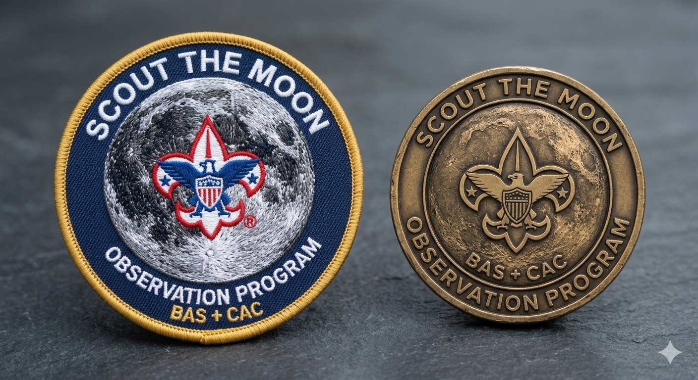
*Design subject to change
Here's the concept for the recognition token. Scouts who complete the Scout the Moon program would earn a patch and a challenge coin. The design features the Moon with the Scouting fleur-de-lis and both the BAS and CAC names. This is still a concept — the final design may change based on committee input and production considerations.
International Observe the Moon Night
Annual global event sponsored by NASA's Lunar Reconnaissance Orbiter missionHeld on a Saturday in Sept/Oct when the Moon is at first quarter phase — ideal for observing craters along the terminator
2026 date: Saturday, September 19 In 2025: estimated 1 million people in 129 countries participated
BAS already participates annually — Scout the Moon creates a natural connection point
Source: NASA Science — International Observe the Moon Night
For those unfamiliar, International Observe the Moon Night is a huge deal globally. NASA runs it through the Lunar Reconnaissance Orbiter team. They pick a Saturday when the Moon is at first quarter — perfect for seeing those dramatic shadows along the terminator. Last year a million people in 129 countries participated. BAS already hosts an event for this. Scout the Moon would make our InOMN event a destination for Scout units across the council.
What BAS Needs to Make It Happen
Development Phase (2026)
Development Committee: 3–5 BAS members3–4 collaborative meetings to create curriculum
Small pilot printing budget (~$50–100)
Ongoing Operations
Program Coordinator: 1 BAS member~2–3 hours/month
Reviews completed materials, coordinates with Council
Modest investment. Sustainable workload.
Here's what I'm asking of BAS. For development, we need a small working group of 3 to 5 members to create the observation guides and materials. That's 3 or 4 meetings over the development phase. Once it's running, one program coordinator spending 2 to 3 hours a month reviewing submissions and coordinating with the council. This is designed to be sustainable and not overburden our members.
Benefits to BAS
Benefit Details
Mission Directly fulfills our educational outreach objectives Visibility Partnership with a major youth organization serving ~1,500 youth Membership Pipeline Introduces astronomy to hundreds of youth and families annually Legacy Sustainable program that outlives any individual volunteer Scalability Materials serve audiences beyond Scouting — schools, libraries, public events
The benefits to BAS are significant. This directly advances our educational mission with measurable impact. It raises our profile through a formal partnership with a major youth organization. It creates a pipeline — every Scout who falls in love with the Moon through this program is a potential future BAS member. And the materials we develop aren't just for Scouts — they can serve homeschool groups, school clubs, library programs, anyone. The development investment pays dividends across multiple audiences.
Timeline
When Milestone
March 2026 Present to BAS membership (tonight!) Spring 2026 Discussion and approval vote (if needed) Q1–Q2 2026 Form development committee; develop materials Q2–Q3 2026 Pilot test with 2–3 Scouts Q3–Q4 2026 Refine materials; finalize recognition token Sept 19, 2026 Potential soft launch at InOMN Q1 2027 Present to Cherokee Council Activities Committee Spring 2027 Official council-wide launch
Here's the timeline. Tonight is the presentation to membership. I'd like to hold a vote this spring. If approved, we form a development committee and start building materials. We pilot test over the summer, refine in the fall, and potentially soft-launch at our Observe the Moon Night event on September 19th. Then early 2027, we present to the Cherokee Council for official approval and launch council-wide in spring 2027.
How You Can Help
Join the Development Committee — help create observation guides and review materials for accuracyVolunteer as Program Coordinator — be the point of contact (~2–3 hrs/month)Support at InOMN — help Scouts observe during our annual eventShare your expertise — your knowledge of the Moon is exactly what these kids needVote to approve the program this spring
So how can you help? If you're interested in curriculum development, join the committee. If you'd like to be the ongoing point of contact, consider being program coordinator. Even if you just show up to our Observe the Moon Night and help a Scout find Mare Tranquillitatis through a telescope, that's a meaningful contribution. And most immediately — support this with your vote this spring.
"I'd like to say hello to all my fellow Scouts and Scouters..."
— Neil Armstrong, en route to the Moon, July 18, 1969
Scouting has been inspiring astronomers and space exploration for 115 years.
Wouldn't it be something if the next generation could credit BAS as well?
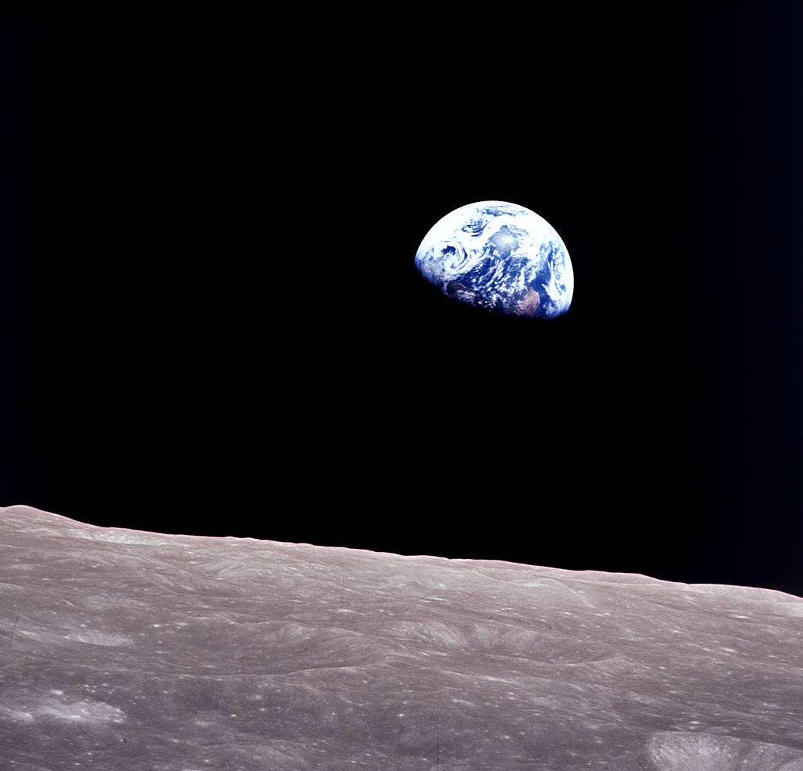
I'll close with this. On July 18, 1969, while hurtling toward the Moon, Neil Armstrong — Eagle Scout — took a moment to greet his fellow Scouts back on Earth. Scouting has been inspiring astronomers for 115 years. With Scout the Moon, BAS can be part of that tradition — helping the next generation look up and wonder. Thank you. I'm happy to take questions.
Questions & Discussion
Tyler Malone
Vice President, Barnard Astronomical Society
Open the floor for questions and discussion. Be prepared to discuss: budget specifics, youth protection compliance, timeline flexibility, how the council approval process works, and what the recognition token might look like.